La más orgánica: hereda la trama de Llegó
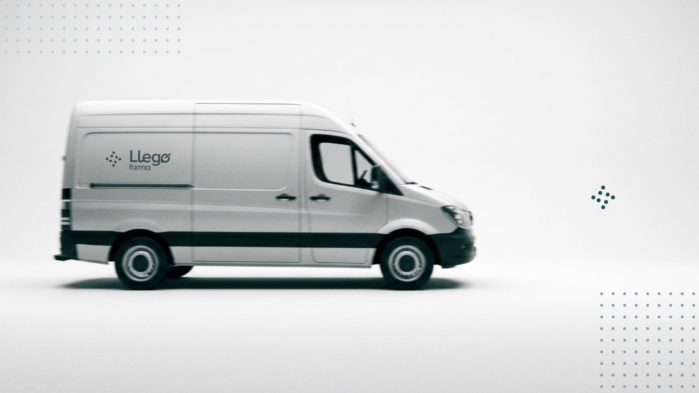
- Lectura de salud
- Detallada
- Tratamiento propio
- Orgánica
- Coherencia con la madre
- Heredada
- Legibilidad pequeña
- Fina
Llegó abría una vertical farmacéutica y ya le habían rechazado una propuesta. Gané el pitch con un sistema, diseñé la marca y su manual, y programé el sitio.
Una submarca que se viera especializada en salud sin perder el respaldo de Llegó
Marca, manual de 36 páginas y llegofarma.cl en línea antes de la feria del sector
Una primera propuesta ya había sido rechazada. Antes de dibujar, el diagnóstico.
Reglas para submarcas
El manual de Llegó no las tenía. Había que inventarlas, y que sirvieran para las verticales que vinieran después.
El criterioLibertad total, pero también responsabilidad total.
Precisión
química
farmacología
Conexión
trazabilidad
cobertura
Elegido el 9 de septiembre
Cinco nodos y dos conectores sobre la misma trama
Isotipo desde el nodo y un turquesa propio
Isotipo desde el nodo y tonos tierra o cobre
Isotipo desde el nodo y el color de su industria
En reservaUna tilde por industria en la ó de Llegó. El cliente prefirió no tocar la madre mientras se posiciona Farma: queda lista para la segunda vertical.
Lámina 05 del pitchEl patrón de puntos ya era parte de Llegó, como decoración. Aquí toma un rolLámina 06Dos lecturas, un mismo sistema: la ambigüedad es intencionalEl isotipoEl nodo, repetido con la misma regla, da la marca de FarmaLámina 10La familia crece con un mismo lenguaje, sin repetir ni improvisar
Un isotipo que se lee como salud sin explicarlo, y 36 páginas de reglas para que otros lo usen.
Feedback del pitch · 1 sepCuatro criterios, antes de dibujar
Un isotipo que se lea como salud, sin explicarlo
La más orgánica: hereda la trama de Llegó

La más directa: una cruz hecha de calles
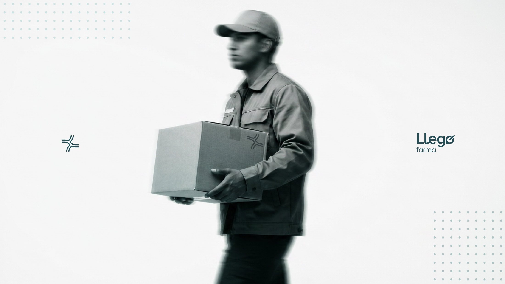
El sistema más consistente: la gramática del nodo
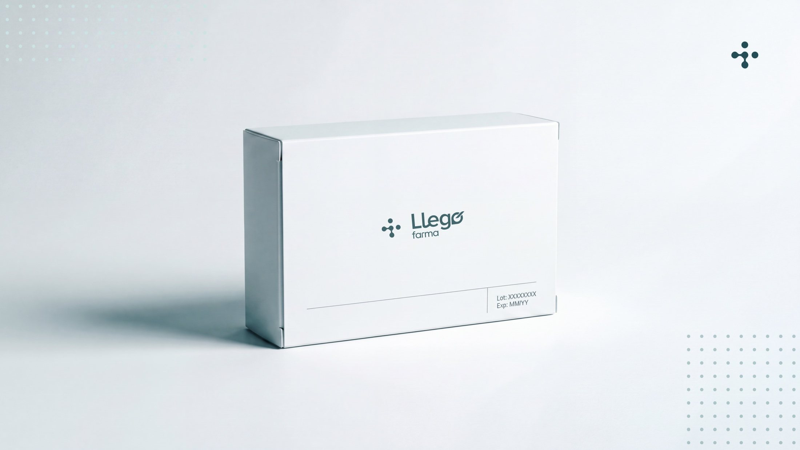
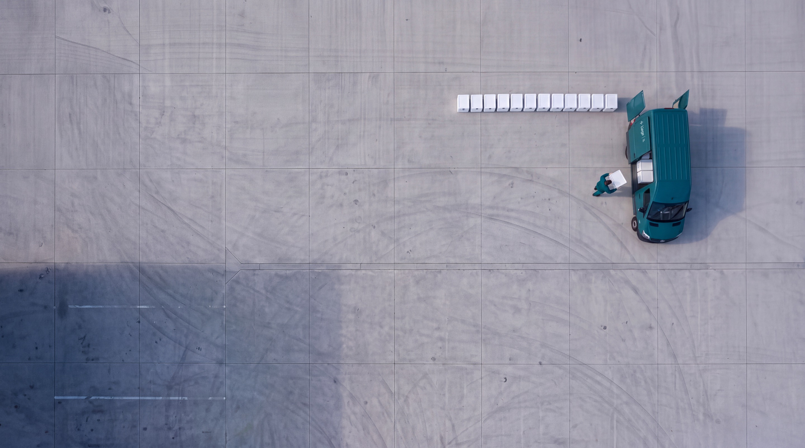
Llegó no tenía fotos propias. Escribí la dirección fotográfica del manual y generé cada imagen con Adobe Firefly siguiendo esas reglas, con retoque en Photoshop.
Por quéLlegó transporta, no almacena: la primera idea mostraba packing y la cambié por un courier que escanea antes de cargar el furgón. Cada foto sale de la operación real, no de la sonrisa de banco de fotos.
La reglaBrandbook, pág. 29
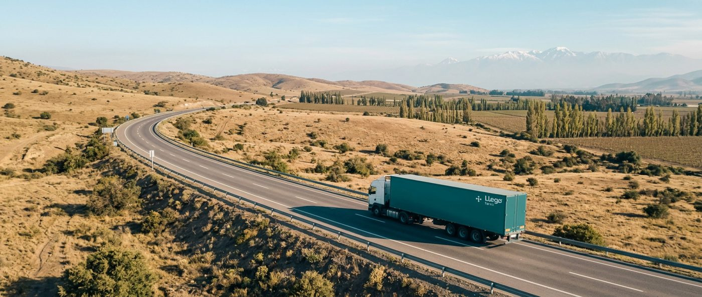
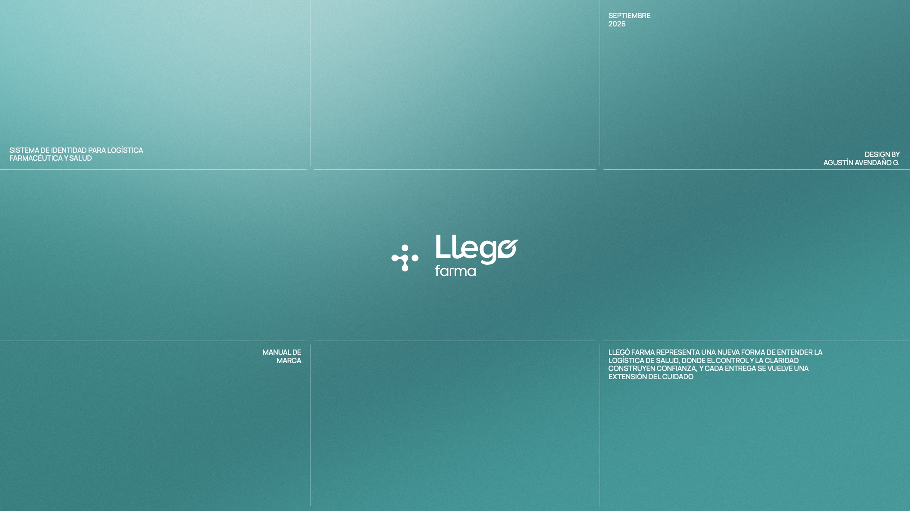
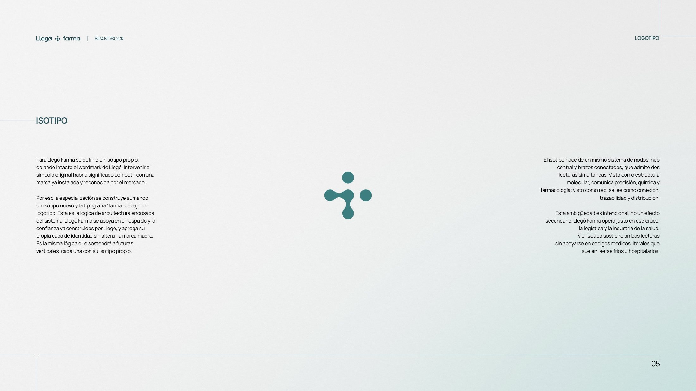
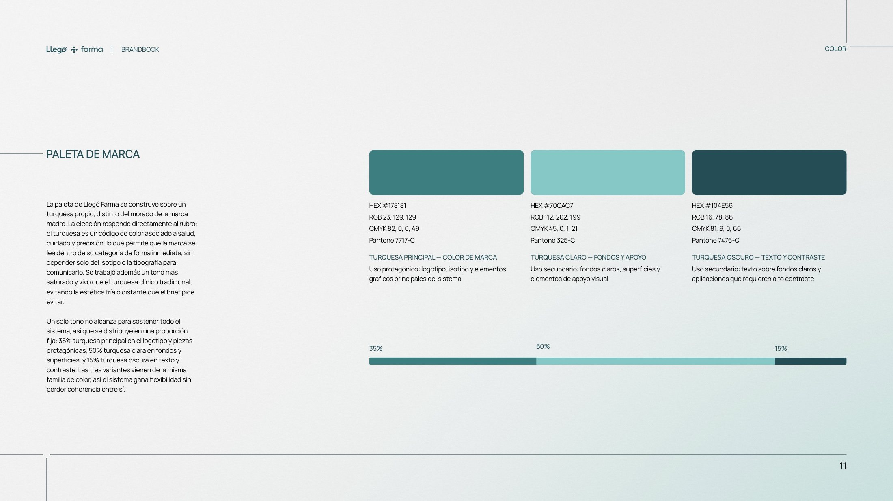
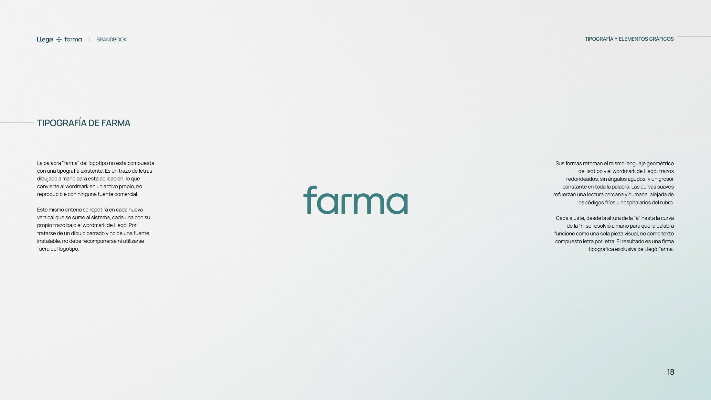
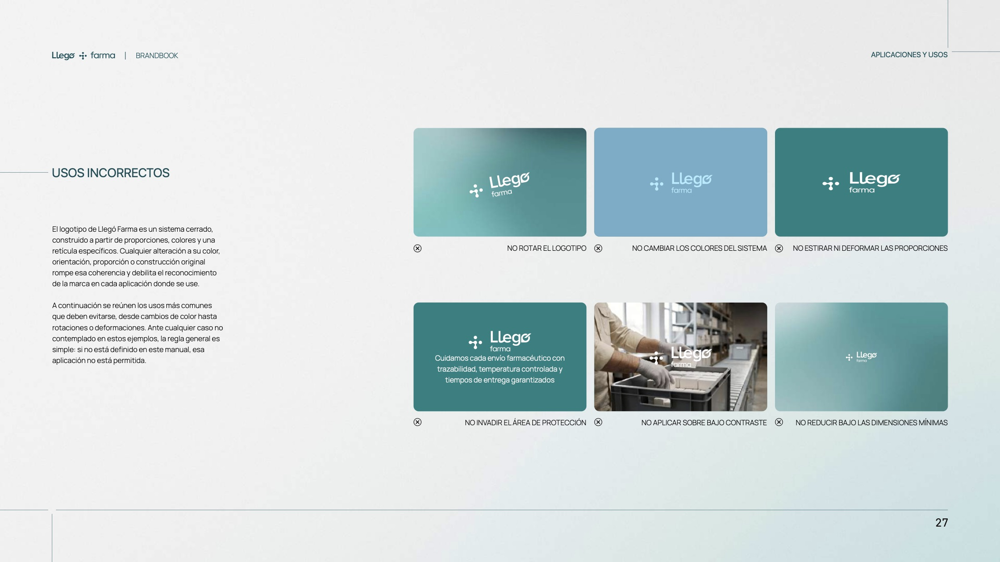
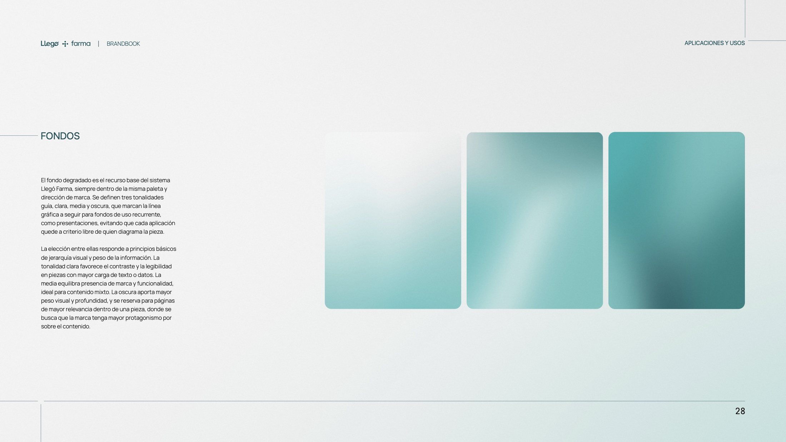
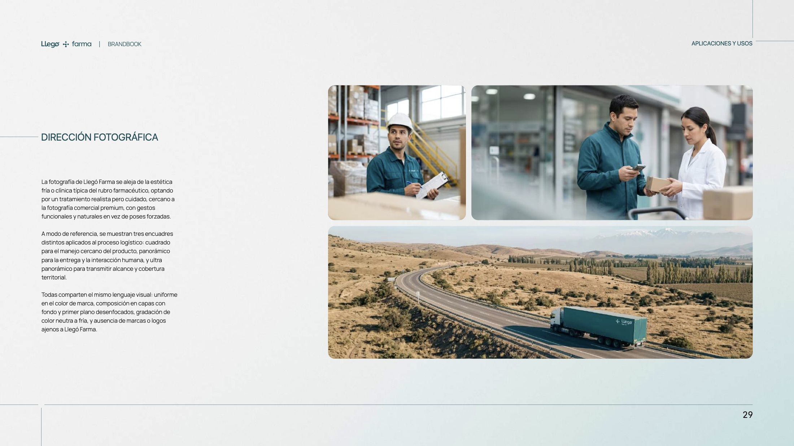
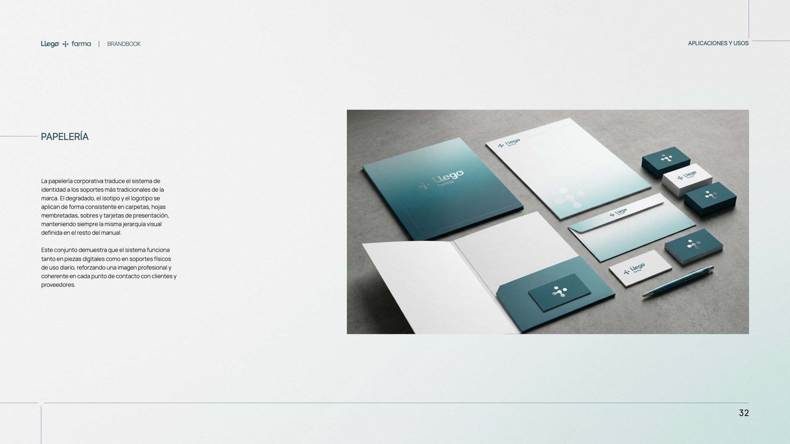
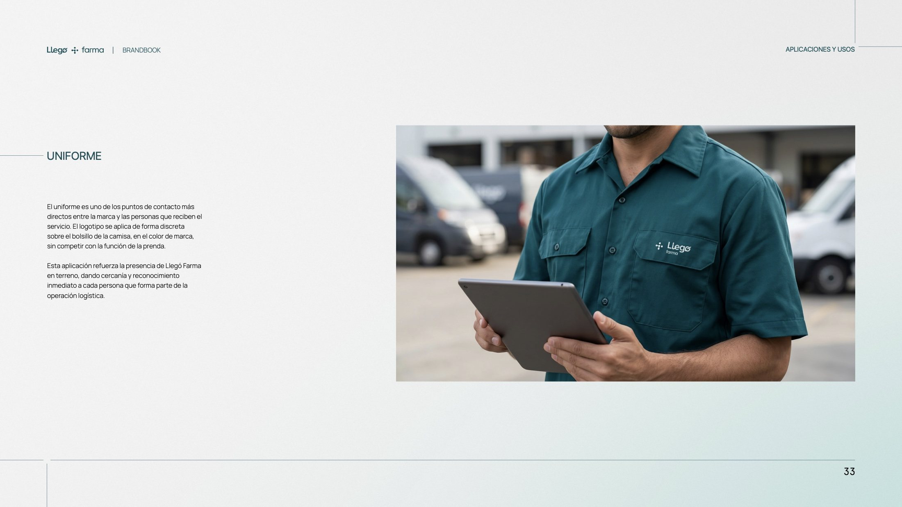
Aprobado casi sin cambios.
Un mes después, otros ya producían piezas con él.
1 octPidieron la web→El documento está tan robusto que no creo que tenga ajustes.
Pidieron una sola página, para una feria. El temor era que quedara bonita, pero plana.
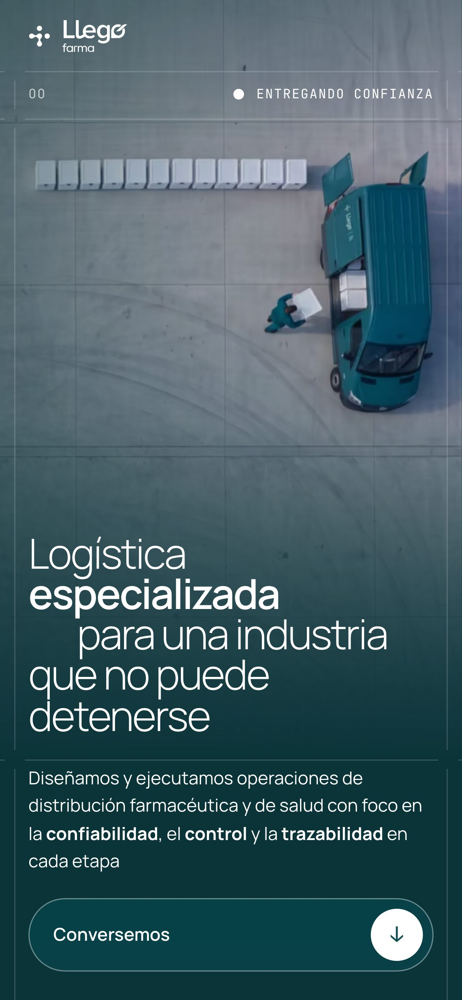
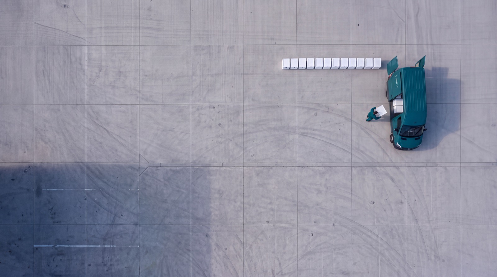
Las líneas del manual cruzan cada sección y se cortan 8 px antes de tocarse. Las fotos no flotan: ocupan módulos.
Por quéLa precisión que promete la marca se ve en cómo está armada la página
Un botón lleva a conversar. Al lado, tres enlaces numerados bajan a Capacidades, Calidad y Tecnología.
Por quéQuien llega desde el QR de la feria decide en segundos qué le importa
Tecnología no tiene foto: un seguimiento en SVG avanza etapa por etapa con el cursor o con el scroll.
Por quéVer la trazabilidad funcionando explica más que la imagen de un panel
Un formulario de seis campos que se envía sin recargar y confirma con los nodos de la marca.
Por quéLa meta de la feria era levantar contactos: cada sección termina llevando aquí
Tenía el temor de que esto fuera bonito pero plano, y en verdad se ve algo súper enriquecido.